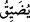

düşmekten Allah’a sığınırız.
“Artık Allah’a karşı” yâni Allah’ın bu azâbına karşı -ki o yerin dibine geçirmedir-
“kendisine yardım edecek” yere batırılmayı önleyecek bir topluluğu, cemaati ve
“avânesi olmadığı gibi,”
Râğıb Isfahânî der ki: “__WORD__ kelimesi, yardımlaşma ve dayanışma hususunda birbirini
destekleyen cemaat ve grub mânâsına gelir.
“O, kendini savunup kurtarabilecek kimselerden de değildi.”
“__WORD__ kelimesinin kullanımı şu şekildedir: “ __WORD__ (Düşmanından onu
kurtardı)” da “__WORD__ (düşmanını yendi)” denilir.
82. Daha dün onun yerinde olmayı isteyenler: Demek ki, Allah rızkı, kullarından
dilediğine bol veriyor, dilediğine de az. Şâyet Allah bize lütufta bulunmuş
olmasaydı, bizi de yerin dibine geçirirdi. Vay! Demek ki inkârcılar iflâh olmazmış!
demeye başladılar.
“Daha dün onun yerinde olmayı isteyenler:”
“Temennî”, herhangi bir şeyi nefiste planlamak, tasavvur etmek ve olmasını istemek
demektir. Çoğu defa hakikatı olmayan şeyler için kullanılır. “Ümniyye” ise bir şeyi
temenni etmekten dolayı nefiste meydana gelen sûret ve hâle denir.
Burada “__WORD__ (dün)” ile kasdedilen; en yakın zamandır. Zira bazen “dün” ile içinde
yaşadığın bugünden önceki gün kasdedilmez; istiâre yoluyla en yakın zaman kasdedilir.
“Demek ki, Allah rızkı, kullarından dilediğine bol veriyor, dilediğine de az.”
“__WORD__ ” fiili, “__WORD__” anlamına gelir, yâni rızkını daraltır, demektir. Bir kimsenin âile
efrâdına nafakasını azalttığı zaman; “__WORD__ (Âilesine nafakası daraldı)” denilir. “__WORD__ fiilinin okunuşu, “__WORD__ (cimri davranmak, az vermek)” gibidir.
Yani, her kuluna genişliği ve darlığı Allah Teâlâ kendisi verir; sadece kendi isteğine
ve hikmetine binâen daraltır ve genişletir; rızkın genişliğini (bast) gerektiren bir
cömertliğe ya da rızkının daralmasını (kabz) gerekli kılacak bir önemsizlik ve